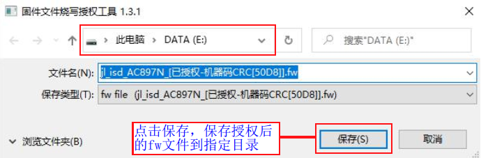
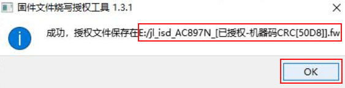
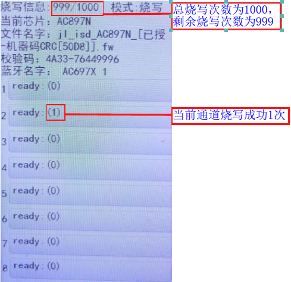

2.10. 授权烧录次数限制功能
2.10.1. 应用场景
比如开发出来的目标芯片程序fw烧录文件，只允许指定烧录器烧录到1000颗芯片上，烧完1000次后，此烧录文件作废，将不能再通过烧录器进行烧录，防止他人谋利。
要实现这个功能，可以将fw文件进行授权烧录次数限制。
一拖八烧录器的fw文件必须授权才能加载烧录，烧录文件无需要限制烧录次数，可使用无限制模式进行授权。
2.10.2. 授权模式介绍
Fw/ufw文件支持两种授权模式：无限制模式和绑定机器码模式。
无限制模式
此模式授权后的FW/UFW文件不和具体的某一台一拖八烧录器绑定，只要KEY匹配的一拖八烧录器都能加载烧录；烧录文件无需要限制烧录次数，可使用无限制模式进行授权。
绑定机器码模式
此模式授权后的FW/UFW文件只能被绑定的机器码所属的烧录器加载烧录。
2.10.3. 无限制模式授权fw文件制作
【1】PC端双击打开
固件文件烧录授权工具_(版本号).exe可执行文件(请联系杰理深圳办获取此工具)。【2】按如无限制授权fw文件生成所示的1~4步骤操作，出现如无限制授权fw文件保存所示保存界面，点击保存授权后的fw文件到指定目录。
【3】点击保存后，如保存授权fw文件提示信息所示提示保存成功和保存在的具体路径，点击ok即可。

无限制授权fw文件生成

无限制授权fw文件保存

保存授权fw文件提示信息
2.10.4. 绑定机器码模式授权
2.10.4.1. 制作限制烧录次数fw文件
机器码生成步骤
【1】打开PC端控制界面（请参考《打开PC端控制界面》小节内容）；
【2】如打开机器码生成界面所示，点击“设备”->“机器码”，打开机器码生成界面；
【3】如机器码生成界面所示，点击“更新”，复制生成的机器码到授权工具对fw文件进行授权；

打开机器码生成界面

机器码生成界面
Note
一个烧录器支持4个机器码生成，可制作4个授权次数限制的fw文件，当前只列举序号1的机器码进行fw文件授权，其它序号的机器码生成，fw授权文件制作流程一致。
生成机器码授权的fw文件
【1】PC端双击打开
固件文件烧录授权工具_(版本号).exe可执行文件工具界面；【2】按如机器码授权fw文件生成所示1~6步骤操作，出现如机器码授权fw文件保存界面所示保存界面，点击保存授权后的fw文件到指定目录；
【3】点击保存后，如保存授权fw文件提示信息所示提示保存成功和保存在的具体路径，点击ok即可。

机器码授权fw文件生成

机器码授权fw文件保存界面

保存授权fw文件提示信息
2.10.4.2. 制作不限制烧录次数fw文件
制作不限制烧录次数fw文件，同制作限制烧录次数fw文件步骤基本一致，唯一不同的是不限制烧录次数fw文件制作勾选的是“无限制”，如机器码无限制授权fw文件生成界面所示。
配置完后点击“授权”生成对应的fw授权文件。

机器码无限制授权fw文件生成界面
2.10.5. 授权次数限制的fw文件烧录说明
已授权的FW文件烧录
绑定机器码模式
如制作了限制1000次的fw烧录文件
jl_isd_AC897N_[已授权-机器码CRC[50D8]].fw，参考《打开PC端控制界面》小节，把该fw文件更新到对应生成机器码的烧录器。更新完已授权的fw文件到烧录器后，走正常的芯片烧录流程，烧录成功1000颗芯片后，烧录器将不再支持该FW文件烧录，显示屏报“授权次数已用完”。
如制作了无限制授权的fw文件，该fw文件可被对应生成机器码的烧录器进行无限次烧录。
无限制模式
该模式下授权的fw文件烧录，把fw文件更新到任意一拖八烧录器后，走正常的芯片烧录流程即可。
查看fw文件授权次数信息
打开PC端控制界面（请参考《打开PC端控制界面》节内容），点击“设备”->“机器码”，打开如查看授权次数使用情况界面所示的机器码生成界面,找到授权的fw文件对应的机器码校验码序号，查看授权次数信息。
如
jl_isd_AC897N_[已授权-机器码CRC[50D8]].fw的校验码为50D8，与序号1机器码对应的校验码一致，其授权次数为1000。
查看授权次数使用情况界面
查看授权次数使用情况
绑定机器码模式下授权有次数限制的fw文件烧录，对应烧录器显示屏显示界面显示有总烧录次数和剩余烧录次数，每个通道进度条部分显示有烧录成功次数，如授权烧录次数使用情况所示。

授权烧录次数使用情况
中途更换烧录程序
中途更换烧录程序，不会造成当前fw授权次数信息掉失，下次可以更新回当前授权的FW继续使用。只有更新其它程序后，重新更新当前序号的机器码，当前序号原有授权信息才作废。
2.10.6. 注意事项
请保护好未授权的fw文件，不乱转发他人，否则本次授权烧录次数限制无任何意义。